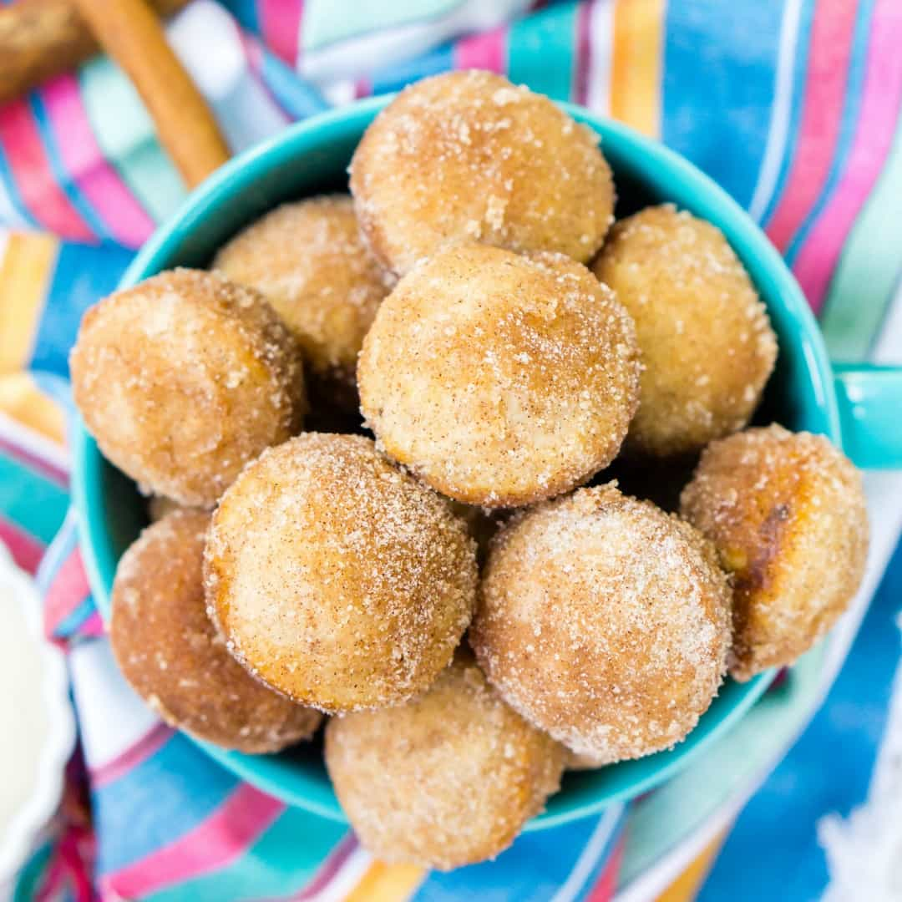

Donut muffins

description
Sweet Cinnamon tasting donut muffins
Ingredients
- ½ cup white sugar
- ¼ cup margarine, melted
- ¾ teaspoon ground nutmeg
- ½ cup milk
- 1 teaspoon baking powder
- 1 cup all-purpose flour
Finishing touches
- ¼ cup margarine, melted
- ½ cup white sugar
- 1 teaspoon ground cinnamon
Steps
- Preheat the oven to 375 degrees F (190 degrees C). Grease 24 mini-muffin cups.
- Mix sugar, melted margarine, and nutmeg for muffins in a large bowl. Stir in milk, then mix in baking powder and flour until just combined. Fill the prepared mini muffin cups about half full.
- Bake in the preheated oven until the tops are lightly golden, 15 to 20 minutes.
- While muffins are baking, prepare finishing ingredients. Place melted margarine in a bowl. In a separate bowl, mix together sugar and cinnamon.
- Remove muffins from the oven and remove from their cups. Dip the top of each muffin in margarine and roll in sugar-cinnamon mixture to coat.
- Let cool for 10 minutes before serving.